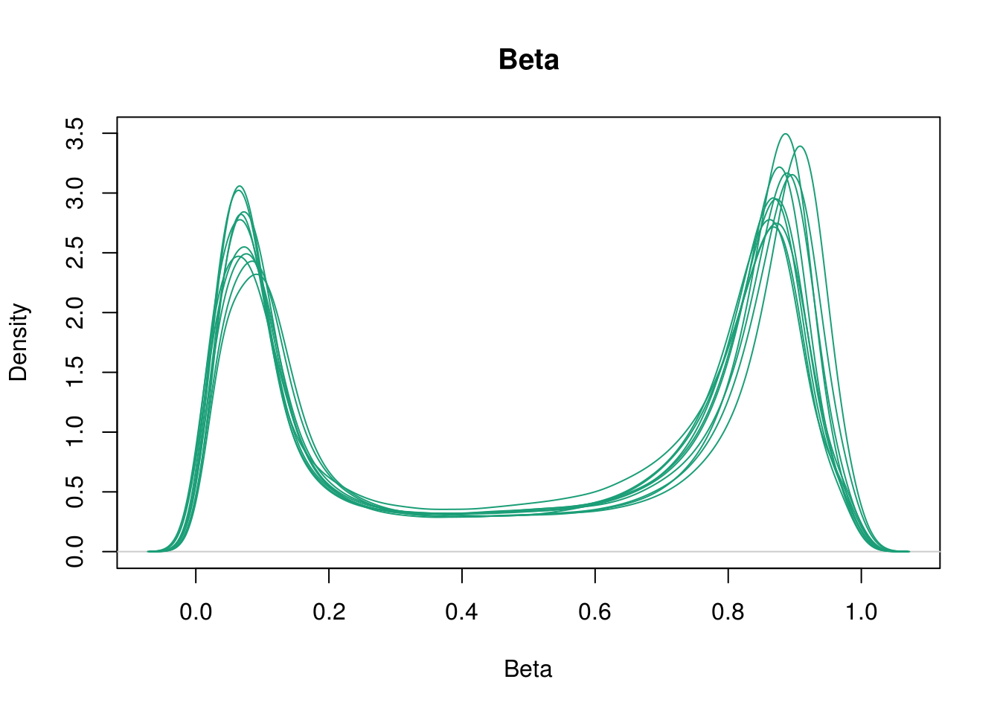
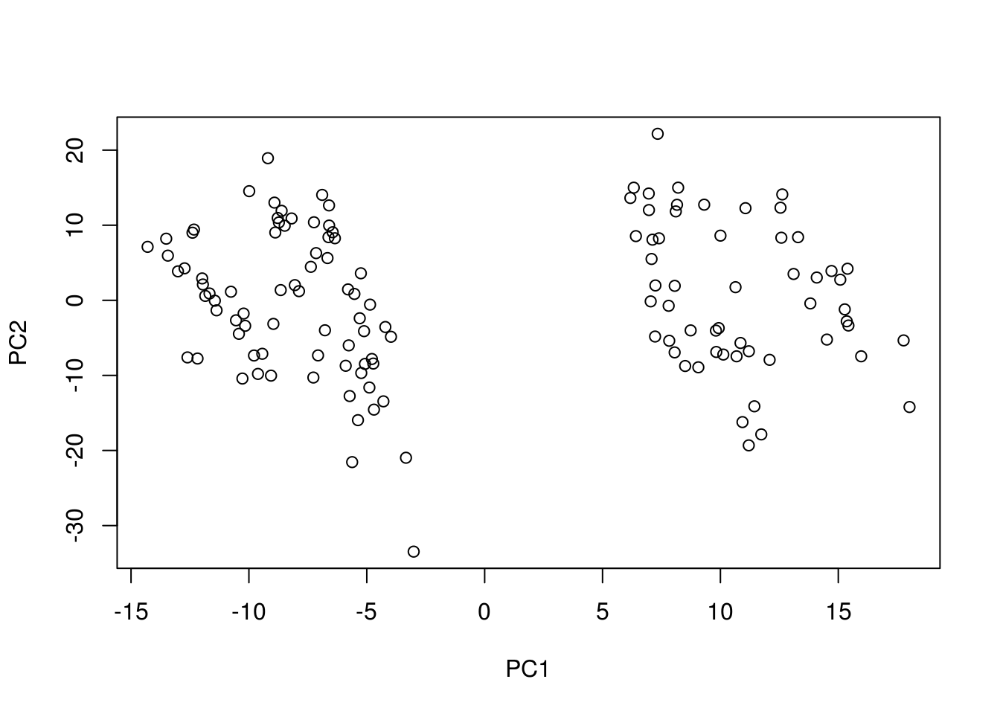
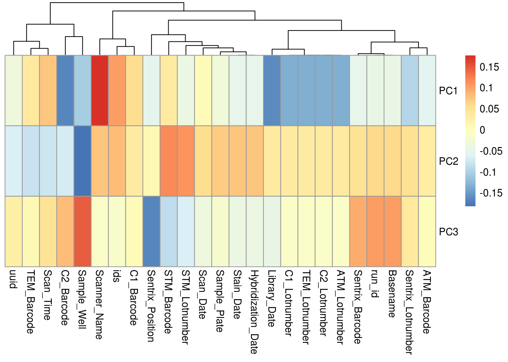
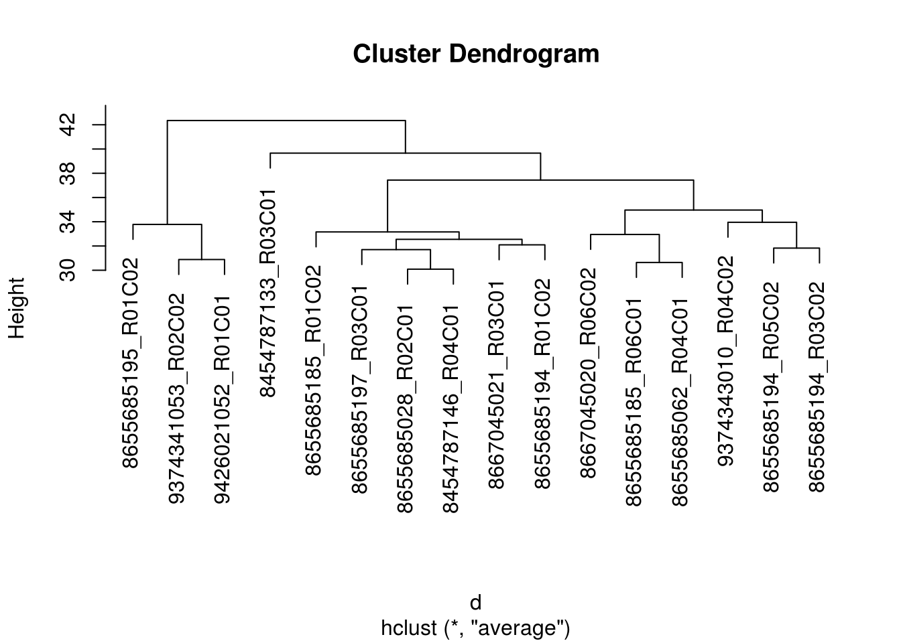
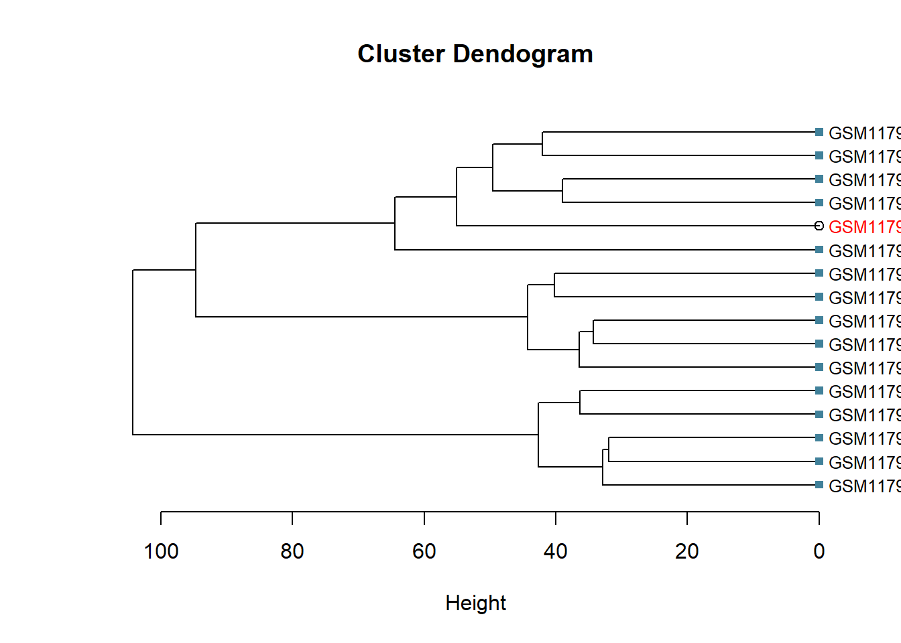

Here we show different ways to inspect the 450k with emphasis on fast and efficient tools for large data sets…
Inspect distribution of beta-densities across all samples can be done either before and after normalization. The following is just just take from minfi.
library(minfi)
densityPlot(RGset[, 1:10], main = "Beta", xlab = "Beta")## Loading required package: IlluminaHumanMethylation450kmanifest
Using the irlba-package for efficient calculation of principal components, e.g., specifying the maximum number of PCs to calculate. The irlba-algorithm doesn’t allow any NA’s
library(irlba)
beta <- getBeta(RGset, type="Illumina")
beta[is.na(beta)] <- median(beta, na.rm=TRUE)
pc <- prcomp_irlba(t(beta), n=3)
summary(pc)## Importance of components:
## PC1 PC2 PC3
## Standard deviation 13.2943 11.2021 7.9687
## Proportion of Variance 0.4833 0.3431 0.1736
## Cumulative Proportion 0.4833 0.8264 1.0000plot(pc$x)
Note getBeta extracts Methylated and Unmethylated intensities and converts them to beta-values using M/(M+U), whereas, type="Illumina" adds 100 to the denominator which prevents beta-values becoming NA if both M and U are exactly zero.
Inspect heatmap correlations of control probes with technical/biological covariates:
library(pheatmap)
df <- apply(targets, 2, function(x) as.numeric(factor(x)))
keep <- apply(df, 2, sd) > 0
cxy <- cor(pc$x, scale(df[, keep]))
pheatmap(cxy, cluster_rows=FALSE)
This is more appropriated for smaller sample sizes Using the fastclust-package.
library(fastcluster)
beta <- getBeta(RGset[,1:16], type="Illumina")
d <- dist(t(beta),method="euclidean")
fit <- hclust(d, method="average")
plot(fit)
Interesting <- sample(colnames(beta),1)
colorLeafs <- function(x) {
if (is.leaf(x) && attr(x, "label") %in% Interesting) {
attr(x, "nodePar") <- list(lab.col="red", pch=NA)
}
return(x)
}
dd <- dendrapply(as.dendrogram(fit), colorLeafs)
op <- par(mar=c(10,4,4,2))
plot(dd)
par(op)